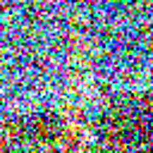
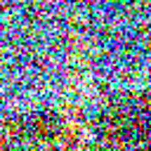
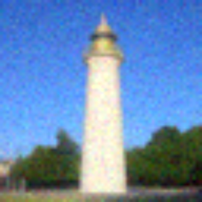
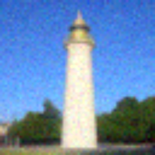
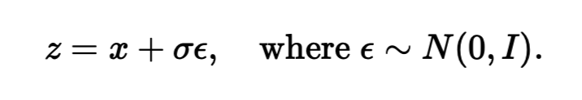
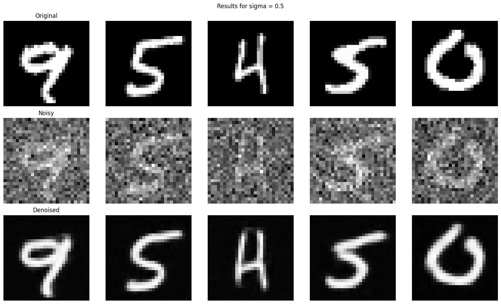
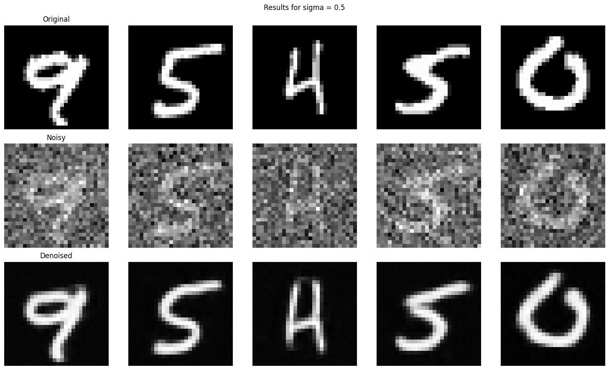

I finished the website after I submitted everything to gradescope. However, all images, except for the images for part 1.10 (I forgot to upload them before) were committed to the repository before I submitted everything to gradescope. As I am taking the class PNP, please consider the website for grading since although the pdf I submitted to gradescope contains all the necessary imagery, it is not meant to be a report since I was very time constrained when I submitted everything to gradescope. But feel free to regenerate everything as the code I submitted to gradescope was final.
In the first part of this project, we will be generating images with a pre-trained denoising model based on two unets, stage_1 unet can generate 64x64 pixel images and stage_2 unet can generate 256 x 256 pixel images. We access the model through Hugging Face. The model also takes in an argument of num_inference, which increases the steps in the denoising process. This implies that we expect images generated with higher num_inferences to be denoised further and be somewhat of higher quality and more detailed. Below is 2 sets of 3 images generated with different num_inferences, for the first set, num_inference is 20, for the second set, num_inference is 80.


We have a list of precomputed alphas, alpha_bars, and betas generated by the former 2 in accordance with the DDPM paper equations. In diffusion, we assume that we can recover a noisy image by denoising it, so the question now becomes to learn the noise added at each time step, so that we could recover the original image. To do that, we progressively noise a given image, and then subtract the estimated noise from it to get back the original image. If we train a model for this, we can simply recover any image that resembled the images the model was trained with, which is the task of the second part. For this part, we simply noise an image adhering to the below equation. Notice that when t = 0, the second term in the equation should be zero since we should recover the original image in the first timestep, thus, as t approaches 0, alpha_bar_t aproaches 1 and vice versa.


 

In this part we show that using Gaussian Blurring is useless to recover the images from timesteps [250, 500, 750] or recover any noisy image for that matter!

Here, we implement one step denoising, which is simply rearranging the second equation to obtain x_0, original image. To do this, we feed noisy images at different timesteps ([250, 500, 750]) to get the noise estimate from the diffusion model, and put this noise estimate to the above equation and with x_t being our noisy image, we recover the original image.
Although the images above look good, we can do better with iterative denoising. Here, we adhere to the below equation. To get x_t, we input the noisy image to the model to get the noise estimate and recover following the same procedure as one step denoising, then we input this recovered image to the iterative denoising loop getting a iteratively denoised estimate. We follow this procedure with strided time steps for efficiency until we get the clean image. Here we start the strided time steps with i_start = 10, so we start off with a noisy image but not pure noise, just the noised image of the image that we are trying to regenerate. This can be viewed as interpolation in the image manifold, we are basically cruising along the line below from x_t to x_0 according to our model.

 

Notice that if we set i_start = 0, then we start off with pure noise, which generates an image from scratch. Since DeepFloyd is also a text model, we can generate images from scratch with i_start = 0 and unconditional prompt "a high quality photo".

Apperantly, getting noise estimates for a conditional prompt and an unconditional prompt, and combining them according to the below equation with strength measure gamma, we can get better quality images even when we start from scratch. In this case, the conditional prompt is "a high quality photo" and the unconditional prompt is the empty string with gamma = 7.

Here, we show the results of iterative classifier free guidance below for i_start values in [1, 3, 5, 7, 10, 20] and conditional prompt "a high quality photo". For this part, I set the Berkeley Campanile, and the album covers of Animals and High Hopes from Pink Floyd.


Here, I show the results of iterative classifier free guidance below with one web image and two hand drawn images of my own. As target images, I use the web-image of an avocado, and two hand drawn images of a shark and a sailing yacht.


We can also do inpainting, which is leaving off a certain part of the image unchanged and the filling the rest with the generated image. We can easily accomplish this by creating a mask and multiply the denoised image with the mask and multiplying the original image with (1 - mask) adhering to the equation below. I replace the top of Berkeley Campanile, Izmir Saat Kulesi, and Istanbul Kiz Kulesi


Here, we generate images with prompts with different noise levels for input images. To do this, we simply change the conditional prompt to any prompt we'd like and denoise from the same levels as above. For this part I use the prompt "a rocket ship", for 4 of my images.

With this models, for two different prmopts we get two noise estimates adhering the equation below and take their average to be our final noise estimate. This way we denoise an image that looks like prompt 1 upright, and like prompt 2 rotated. For this part, I use the prompts ("an oil painting of people around a campfire", an oil painting of an old man), ("a coffee cup with a handle", a classic golden bell with a curved handle"), ("an oil painting of a snowy mountain village", "a rocket ship"), respectively for the below images.


Just like project 3, we can generate hybrid images with this model, adhering to the equations below. This simply means that we get two seperate noise estimates and lowpass one of them with a gaussian blur and highpass the other one with Gaussian as well and add them to get a hybrid noise estimate for the two different prompts and denoise from there. I use the ("a lithograph of a skull", "a lithograph of waterfalls"), ("a rocket ship", "a pencil"), ("a detailed photograph of a full moon with craters", "a simple round clock on black background") respectively, the results are below.

To implement the unet, we follow the below UNet architecture using the necessary tools from pytorch and GPUs from collab. The loss function L, which is used for backpropagation later to train the UNet better. This UNet architecture helps us getting noise estimates for the image. The convolutional process the image at given resolution and learn patterns and structures in the given noisy image. The down blocks downsample the image, reducing resolution, while increasing the number of channels, essentially extracting features at lower resolution at a lower cost. Up blocks increase the resolution while reducing number of channels, essentially learning global features. Finally the concatenation blocks concatenate blocks at same level of resolution, essentially helping the model combine local details with global features.


A sample set of images from the dataset noised with noise levels [0.0, 0.2, 0.4, 0.5, 0.6, 0.8, 1.0]


After implementing the model above, we can use the UNet to predict the image with a noisy input of the image, by defining the loss to be the distance between the actual image and the predicted image. While training the model, for each epoch, we basically extract a batch from the dataset and noise the images in the batch and put it into the model and run backpropagation algorithm with the given loss function. The loss curve is provided below with the predicted images at different epochs.
The equation for the noisy image, where epsilon is noise and sigma is the noise level.
Model Training Loss

Regenerated images from the model at 1st and 5th epochs respectively:

We train the above UNet with standard deviation 0.5. Here we test the results of the model with images with different noise levels with different standard deviations specifically [0.0, 0.2, 0.4, 0.5, 0.6, 0.8, 1.0].
Instead of making the model predict images at different noise levels, we can make the model predict noise at different time steps, and iteratively denoise the noisy image. We do this by simply finding a way to incorporate time conditioning into the model and subtract the noise at different time levels iteratively, getting to ground truth after T time steps, adhering to the equations below.
Loss function for the noise
Equation for the noisy image.
Regenerated images from the model with different noise levels at [0.0, 0.2, 0.4, 0.5, 0.6, 0.8, 1.0] respectively:
 


We add time conditioning with the fully connected block architecture below. We add time conditioning to the first unflattened block, and the first upscaled block as described below.
Time conditioned Loss function
We train the time conditioned UNet with backprogation again. Only difference is that we are now predicting noise and the loss function is defined as the distance between the predicted noise and actual noise, adhering to the algorithm below.
Time conditioned UNet architecture
Fully connected block architecture
Training algorithm
Time conditioned loss at epoch 5:

Time conditioned loss at epoch 20:

To sample from this UNet, we generate a pure random image, then iteratively predict noise at each time step with our trained model and subtract that noise iteratively until we get to x_0, adhering to the equations below.
Sampling algorithm with T = 300
Sample from the model trained with 5 epochs:

Sample from the model trained with 20 epochs:
We can generate better outputs by making the model class conditional as well. We only have 10 classes since we are working with the MNIST database. To achieve an optimal bias-variance for the model, we add another variable called p_uncond, which randomly turns the class conditional block into the identity map, which allows the model to train on classless inputs, which increase the model performance. To add the class conditioning, we add another fully connected block and multiply it with first unflattened image, and the first upscaled image, then add time conditioning. We train with the same backpropagation algorithm from the time conditional training.
The sampling process is the same as before, only difference is that we also add classifier-free guidance while generating the noise. The results are below.
Time and class conditioned sampling algorithm
Training Loss of the model trained with 5 epochs:
Training Loss of the model trained with 20 epochs:
Sample from the model trained with 5 epochs:

Sample from the model trained with 20 epochs: